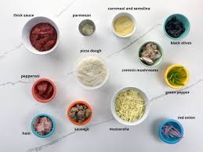

Classic Margherita Pizza Recipe
Ingredients

- 2 1/2 cups of all-purpose flour
- 1 cup warm water
- 1 packet of dry yeast
- /2 cup tomato sauce
- 1 cup shredded mozzarella cheese
- Fresh basil leaves
Steps
- Mix yeast and warm water; let it sit for 5 minutes.
- Add flour and knead into a dough; let it rise for 1 hour.
- Roll out the dough and spread tomato sauce on top.
- Add mozzarella cheese and bake at 200°C (400°F) for 15 minutes.
- Garnish with fresh basil and serve hot.
| Nutrient |
Amount per Serving |
| Calories |
250 kcal |
| Protein |
10 g |
| Fats |
8 g |